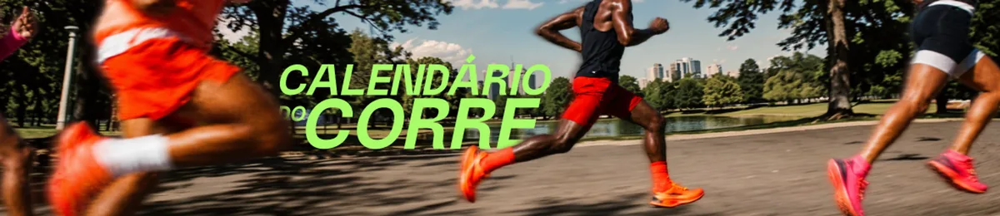

Ative o JavaScript no navegador para ver os locais e as datas das próximas corridas de 2026. Enquanto isso, as inscrições estão disponíveis diretamente na Running Land e na Ativo.
Próximas corridas neste local